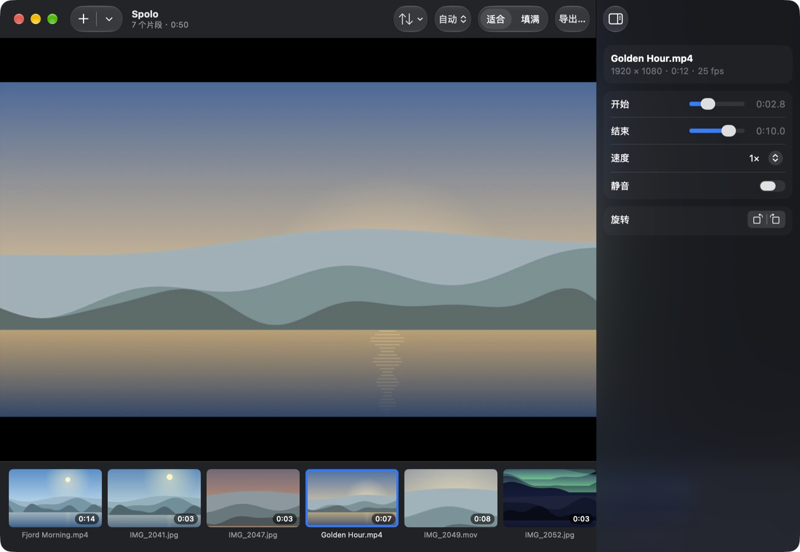

Spolo
照片和视频，合成一个视频。
手机、相机拍的片段，或者录屏，不管什么比例、什么格式，拖进来就行。排好顺序，剪掉头尾，在你的 Mac 上导出一个 MP4 或 MOV。Spole 是挪威语里“胶片卷轴”的意思。
平台macOS 14 或更新版本
价格免费，Apache 2.0
网络完全不联网
语言EN, 简体, 繁體

它能做什么
- 随便混搭任意比例、任意格式的照片和视频。竖拍的手机视频、HDR、没有声音的片段，都能正确合成。
- 排好顺序拖动排序，或按拍摄时间、文件名、添加顺序一键排好。
- 每段都能调修剪、调速（声音不变调）、静音、旋转，设定每张照片停留多久。
- 统一画面自动、16:9、9:16、1:1 或 4:5，加黑边或填满裁切。
- 又快又私密不上传、没有水印、不限数量。片段一致时直接拼接，不重新编码。